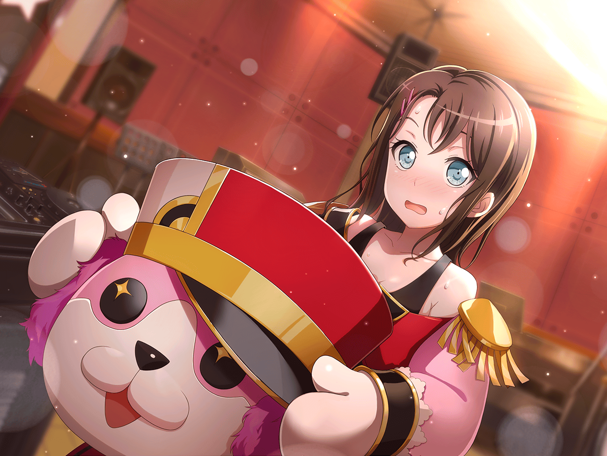

弦巻家 応接室
こころ
そう！ ミッシェルはこのバンドのＤＪよ！
ＤＪがいるバンドってかっこいいわよねっ。
う～んっ。ワクワクしてきたわっ！
花音
み、美咲ちゃん、どうかな？
ミッシェル
まぁ……ＣＤ流すだけなら、楽しそうだし……
こころ
それじゃ決まりね！！
さっそくスタジオ練習に行くわよ！！
薫・はぐみ
おーーーっ
ミッシェル
（なんかどんどん、話が変な方向に……
て言っても、自分で決めたライブなんだよなぁ。
この一回くらい……いいか）
 １週間後
１週間後
スタジオ
こころ
あれからまた１週間ね！
それじゃあみんな、自主練の成果をみせてちょうだい！
ミッシェル、音楽を！
ミッシェル
えっと、……こう？
ミッシェル
えっ。なんだ、結構……
こころ
いえーーいっ♪
はぐみ
えいっ。そいやっ！
薫
ことばは宙に舞い、思いは地に残る……
……儚い……
花音
（が、がんばらなきゃっ……！！）
ミッシェル
信じられないけど……
割とちゃんとバンドしてる……

美咲
いや。……それって……なんかちょっと、
違うんじゃないですか？ いいです。ライブは、
あたし、自分で調べてみます。ミッシェルだけお願いします
ミッシェル
（ふーん。あたしが骨折った甲斐、
まあまあ、あったんじゃないの、これ）
ミッシェル
（はぐみは本当に、
かなりベース練習してきてる。
根性だよって言うだけある……）
ミッシェル
（薫……さんはまだそこまで安定してないけど、
とにかく華があるし）
ミッシェル
（でも、なにより……
花音さん、全然叩けてるじゃん）
こころ
やっほーーーーーっ♪
ミッシェルも盛り上がってるっ？
るんるんいえーーいっ！
ミッシェル
（うん。こころはいつも通り。
スタジオでバク転ね）
こころ
すごいわみんな！ これでライブ本番も完璧ね！
はぐみ
すごいよ！ このバンドって、最強だよ！
薫
音楽とはなんと美しいのか。
素晴らしき新世界……！
ミッシェル
……って、まだ１曲しかできるようになってないから
こころ
１曲できたってことは、
何曲だってできるってことよ！！
ミッシェル
……本当、スーパーポジティブ。
まあでも、結構よかったかもね
花音
美咲ちゃん、本当っ？
わ、私、ちゃんと叩けてた？
ミッシェル
花音さんは、もっと自信持った方がいいよ。
みんなの演奏、しっかり支えてたと思う。
あたし、プロじゃないし、そんなにわかんないけど
ミッシェル
……ドラム辞めなくて、良かったんじゃない
花音
はわ……！？
う、うん……っ
はぐみ
よーしっ！ この調子で
このバンドでライブハウスを盛り上げちゃうぞーっ
……って、このバンド？
こころ
バンドがどうかしたの、はぐみ
はぐみ
こころん。
このバンドの名前ってなーに？
まだ決めてなくない？
花音
そ、そういえば……？
ミッシェル
ふー。あっつ。
キグルミって蒸すわーやっぱり
ミッシェル
あ。ようやくお気づきのみなさん。
あたしが気を利かせて、バンド名は未定で
出演申請してますから、どうぞご心配なく
こころ
バンド名なら決まってるわっ
ミッシェル
決まってるなら言おうよ！
こころ
ハロー、ハッピーワールド！
世界を笑顔に！ って意味よ
はぐみ・ミッシェル
ハロー……
花音・薫
ハッピーワールド……
こころ
誰かを笑顔にするには、
まずは自分から笑顔になって、話しかけないとってこと。
『ハロー！』ってね！
はぐみ・薫
うん、すごく……！
花音
こころちゃんらしいし、私も好き、かな……
ミッシェル
なんかそのままって感じだけどね。
あっつ。
ちょっとあたし、コーヒー飲むから、これ、脱ぐわ

美咲
…………ん？
こころ・薫・はぐみ
う……
うわあああああああああ！！！！
はぐみ
ミ、ミッシェルの頭が女の子になっちゃった！！
ミッシェルって頭は女の子で身体はクマだったの！？
こころ
違うわ、中に女の子が入ってる！！
いつの間にかミッシェルと入れ替わったんだわ！
薫
じゃあ本物のミッシェルはどこだ？
これは魔法か！？
こころ
大変だわ！
本物のミッシェルを見つけないと……
……ん？
美咲
……お。ようやく理解して……
こころ
そう言えばあなた、誰だったかしら？
どこかで見たことあるのに、思い出せないわ？
美咲
いやこの前一緒に作戦会議したし、
同じクラスで毎日会ってるよ！？
花音
こ、こころちゃん達、
ミッシェルは美咲ちゃんで……！
美咲
いや、花音さん、もういい……
こころ
ミッシェルに何かあったら大変だわ！
すぐに本物を探しに行きましょう！！
はぐみ・薫
ミッシェルを助けよう！ おー！
美咲
……この３バカに何を言っても無駄だ